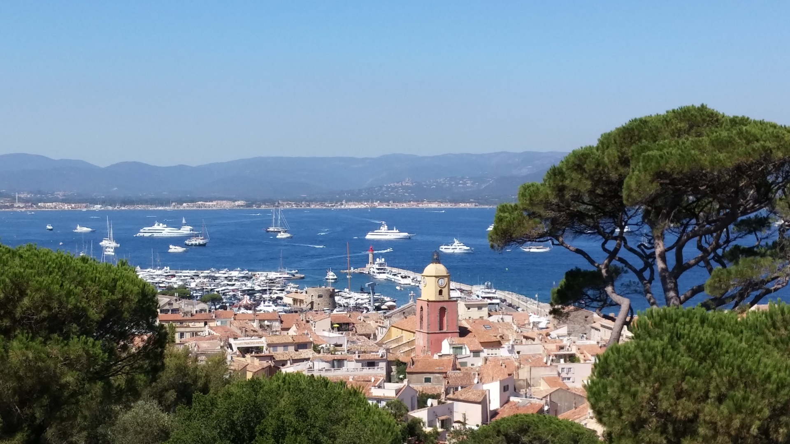
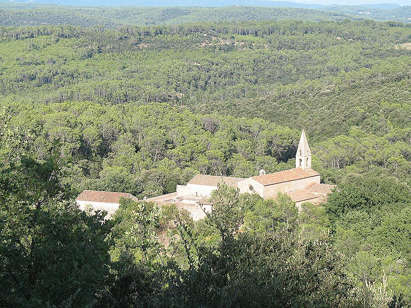
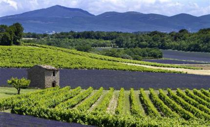

Les amateurs de sport et de randonnée trouveront forcement leur bonheur. La pratique de nombreuses activités tels que VTT, kayak, rafting, golf, escalade et bien d´autres encore est possible aux alentours de Carcès.
Les amateurs de sport et de randonnée trouveront forcement leur bonheur. La pratique de nombreuses activités tels que VTT, kayak, rafting, golf, escalade et bien d´autres encore est possible aux alentours de Carcès.
 La Provence est une région aux multiples facettes où chacun trouvera son compte. Les vacances étant avant tout un moment de détente, la région regorge le coins agréables et paisibles, de sites culturelles ou d'activités sportives. Les amoureux de la nature trouveront leur bonheur à quelques encablures de Carcès. Le lac de Sainte-Croix et le parc naturel régional du Verdon sont des incontournables de la région tout comme les massifs des Maures et de l'Estérel. En chemin vous pourrez en profiter pour découvrir les villages perchés de Provence tels que Moustiers-Sainte-Marie ou Tourtour ainsi que les champs de lavande des Alpes de Haute Provence. A moins d'une heure de route de la maison, découvrez le littoral méditerranéen, ses plages et ses bourgades trépidantes tels que Saint-Tropez ou les îles d'Hyères.
  La région propose également de nombreuses activités culturelles tels que l'abbaye Cistercienne du Thoronet, datant du XIIe siècle, ou les habitations troglodytes de Cotignac et de Villecroze. Découvrir également la gastronomie et l'artisanat provençaux en vous baladant sur les marchés locaux qui sillonnent la région de village en village. La réputation des Côtes de Provence n’est plus à faire et les amateurs de vin n'auront que l'embarras du choix pour organiser une dégustation chez le producteur.
Les amateurs de sport et de randonnée trouveront forcement leur bonheur. La pratique de nombreuses activités tels que VTT, kayak, rafting, golf, escalade et bien d´autres encore est possible aux alentours de Carcès.